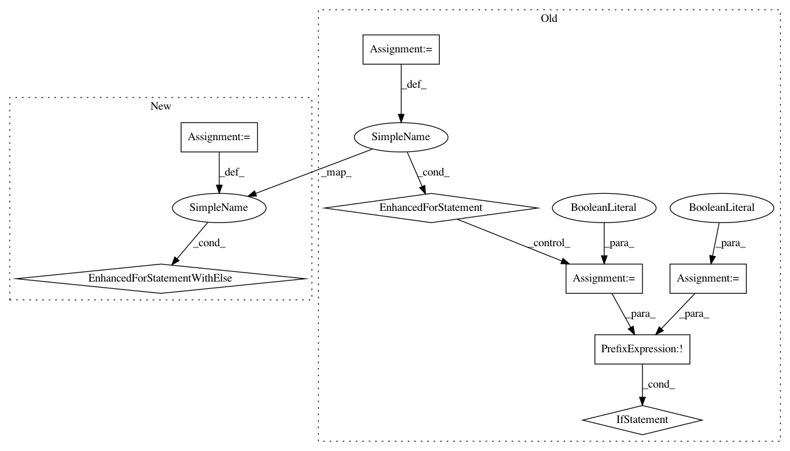

461fc09474d8f532b9c0250dd54b885c537df99f,research/tcn/estimators/base_estimator.py,InitFromPretrainedCheckpointHook,begin,#InitFromPretrainedCheckpointHook#,58
Before Change
// Variable filtering by given exclude_scopes.
filtered_variables_to_restore = {}
for v in variable_to_restore:
excluded = False
for exclusion in exclusions:
if v.name.startswith(exclusion):
excluded = True
break
if not excluded:
var_name = v.name.split(":")[0]
filtered_variables_to_restore[var_name] = v
// Final filter by checking shape matching and skipping variables that
// are not in the checkpoint.
final_variables_to_restore = {}
for var_name, var_tensor in filtered_variables_to_restore.iteritems():
if var_name not in variable_shape_map:
// Try moving average version of variable.
After Change
// Variable filtering by given exclude_scopes.
filtered_variables_to_restore = {}
for v in variable_to_restore:
for exclusion in exclusions:
if v.name.startswith(exclusion):
break
else:
var_name = v.name.split(":")[0]
filtered_variables_to_restore[var_name] = v
// Final filter by checking shape matching and skipping variables that
// are not in the checkpoint.
final_variables_to_restore = {}
for var_name, var_tensor in filtered_variables_to_restore.iteritems():
if var_name not in variable_shape_map:
// Try moving average version of variable.
In pattern: SUPERPATTERN
Frequency: 4
Non-data size: 8
Instances
Project Name: tensorflow/models
Commit Name: 461fc09474d8f532b9c0250dd54b885c537df99f
Time: 2018-05-15
Author: kongsea@gmail.com
File Name: research/tcn/estimators/base_estimator.py
Class Name: InitFromPretrainedCheckpointHook
Method Name: begin
Project Name: tensorflow/models
Commit Name: 461fc09474d8f532b9c0250dd54b885c537df99f
Time: 2018-05-15
Author: kongsea@gmail.com
File Name: research/slim/train_image_classifier.py
Class Name:
Method Name: _get_init_fn
Project Name: allenai/allennlp
Commit Name: 40ec35876d38c4797ad3ee9bf911b019faa5a61d
Time: 2017-08-25
Author: mattg@allenai.org
File Name: allennlp/nn/initializers.py
Class Name: InitializerApplicator
Method Name: __call__
Project Name: SpiNNakerManchester/sPyNNaker
Commit Name: bb062f4a9456e66354767b608541bd9e51e3b8e1
Time: 2020-02-03
Author: donal.k.fellows@manchester.ac.uk
File Name: spynnaker/pyNN/models/neuron/synapse_dynamics/synapse_dynamics_structural_common.py
Class Name: SynapseDynamicsStructuralCommon
Method Name: set_projection_parameter